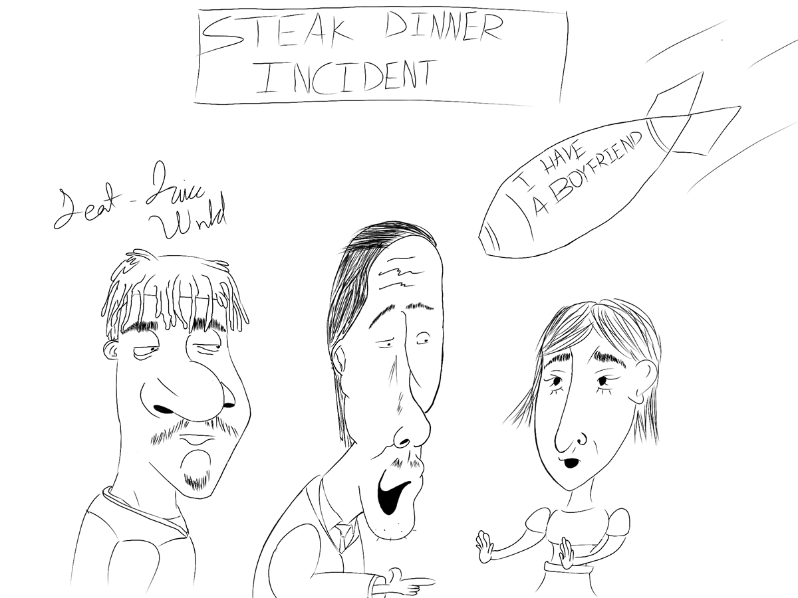

After experiencing a bomb of a rejection, one might question why Juice Wrld is featured. To find out, we must go back to when I spotted Jennie holding hands with another individual on their way back to school. After witnessing such a catastrophic scene, I equipped my ears with AirPods and played "All Girls Are The Same". The worst part? I was twice as good-looking as him; the bastard was still wearing a mask after COVID.
- Chicken Connoisseur